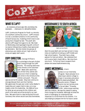
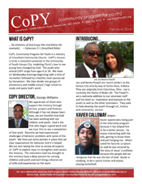
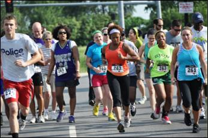
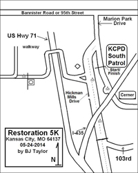

| Pictured above some of our youth who attend CoPY communitypicnic |
… be imitators of God [copy Him and follow His example]… —Ephesians 5:1 (Amplified Bible)
CoPY, Community Program for Youth is a ministry of CrossPoint Community Church. CoPY’s mission is to be a consistent presence in the community of South Kansas City modeling Christ’s love to see young lives changed by God. The youth who at-tend CoPY range from ages 5 to 18.
We meet on Wednesday evenings beginning with a time of recreation followed by snacks or a hot meal. We then divide into groups of elementary, middle school / high school to study and apply God’s word.
Find out more about the CoPY program through the quarterly news letter.
| Summer 2014  | Fall 2014 |
George R. Williams
(816) 761-5513
crosspointkc@gmail.com
| Start of 2013 Run|Walk | Course Route |
To improve and promote the well being of children and youth in South Kansas City through community support and collaboration.
Proceeds go to: Hickman Mills Educational Foundation ▪ KC Parks & Recreation Youth Advocacy Fund ▪ LINC Program
Dennis Solis
(816) 761-5513
restoration5krun@gmail.com
Fullfilling the Great Commission by sharing the love of God through service to the community. Over the past few years we have had various outreaches to the community including a Summer Elementary Reading Program, the October Harvest Festival for Children and Three-on-Three Basketball tournaments.
Top of Page: